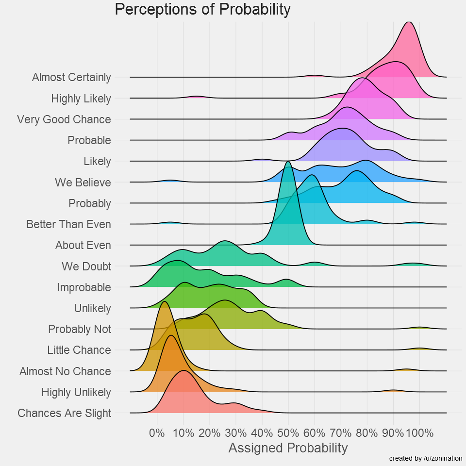
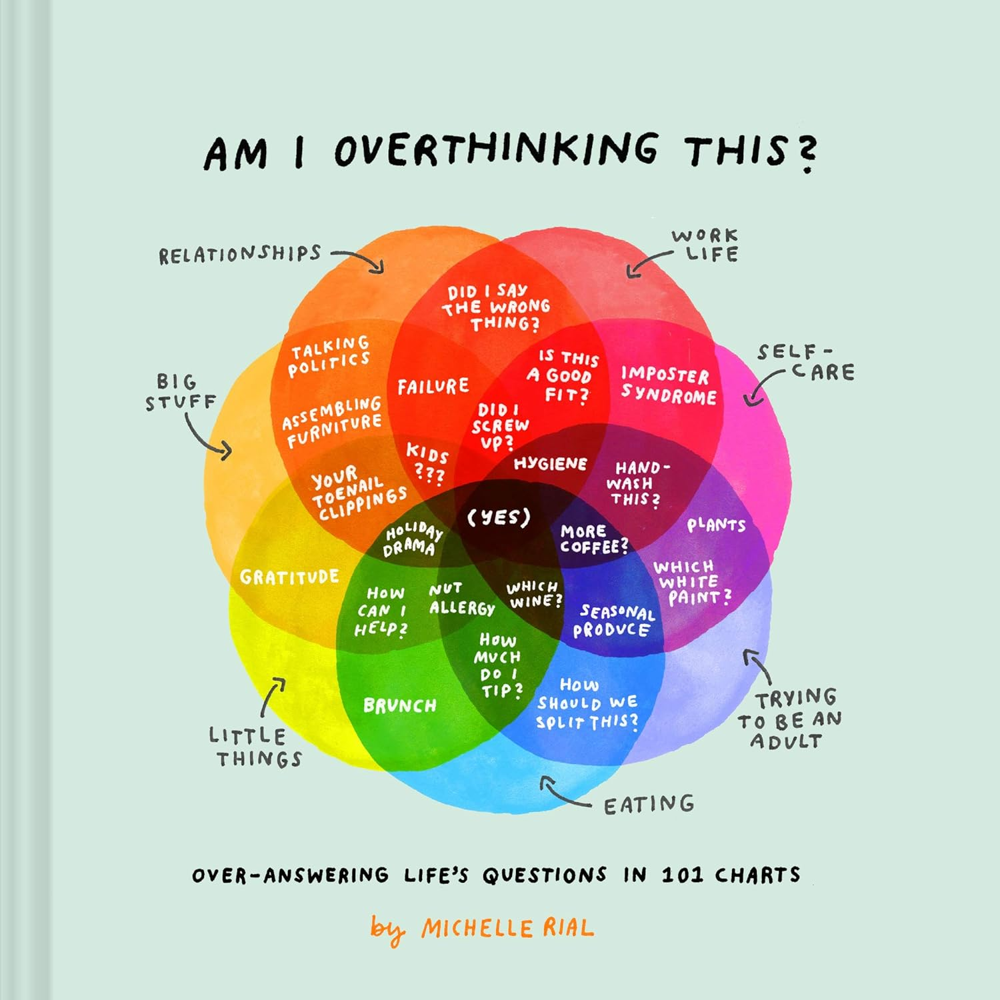
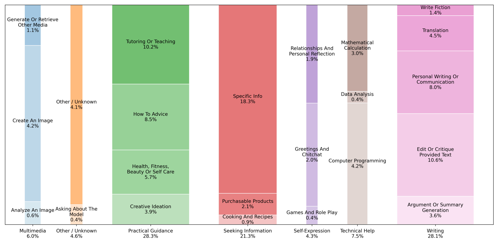
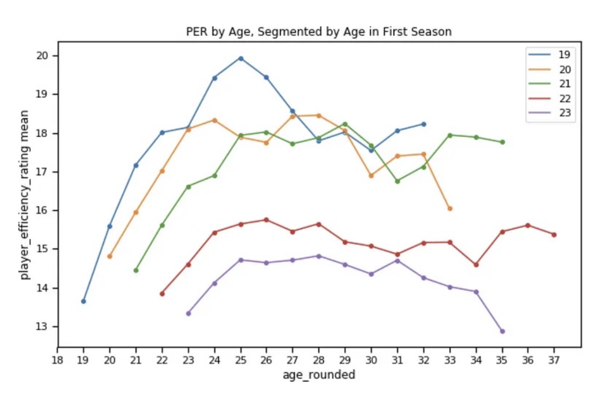

Charts Worth Talking About
A small, growing collection of visualizations I found worth thinking about.

Perceptions of Probability
How do people actually interpret phrases like "highly likely" or "we doubt"? This ridgeline plot maps surveyed probability estimates to the language analysts use — and the overlap is wild. A classic argument for just saying the number. However, that's not always possible, so it's on us to be prepared to communicate effectively on the level people understand and watch out for accidentally giving the wrong impression.
Source
Am I Overthinking This?
This book is brilliant. And not just because the author is pioneering a trend of 7-set Venn diagrams. I think it's a fun reminder that there can be joy in simply looking at a chart and finding all the little hints, nuggets of information, and more in it, but also that even a complicated chart can still serve up a strong message that grabs your attention: Am I overthinking this? Yes.
Source
What Are People Actually Using AI For?
Last year OpenAI published this fascinating breakdown of what people are using AI to do, categorized by AI itself of course. I've long felt that mosaic plots are fantastic in theory, since they let you see groups and individual grouped items so clearly, but this spin on it with extra space between the bars was a pleasant surprise. The width of the bars are proportional to their total contribution as a group, so area is accurate. It's not without its compromises, but the visual clarity and the smartly chosen categories is a great example of an information-dense chart that still remains accessible.

NBA Debut Age Effect on Performance
I saved this chart last year because it answered a burning question or two of great relevance for the draft I had. First, how long, exactly, do you need to wait for your newly drafted player to contribute, and then to peak? And second, do the first few years look dramatically different if you waited to debut? There are selection effects in play, so it can't tell you when to debut, but it can tell NBA GMs about what to expect. Unfortunately, I cannot find the source of this chart, anywhere. If you recognize it, let me know! I want to reread the report it came from!
Skills
Technical
Data Science
Advanced Statistics
Visualization & Tools
Experience
Sales Specialist – Installations
May–Dec 2022Lowe's · Orem, UT
Managed and sold special-order flooring product, window treatments; mentored and trained four associates. Generated $1 million in revenue throughout home improvement industry career.
Various Sales and Specialist Roles
Feb 2018–Aug 2021The Home Depot · Beaverton, OR & Provo, UT
Customer-facing and commercial sales and installations, for flooring, blinds, windows, and doors; liaising with installers, manufacturers, and customers. Led store on safety team to one year without injury and streamlined processes.
Research Assistant
BYU Department of Spanish & Portuguese
Assisted in assembling literature review, cleaning and organizing data, preparing presentation slides, and other tasks to produce a published study on Spanish language proficiency study methods and conference presentation.
Education
B.S. Statistics: Data Science
Brigham Young University, Provo, UT · Graduated April 2025
Member: ASA (American Statistical Association), J-ISBA (International Society for Bayesian Analysis). Returned to complete degree in 2021 after several years of industry experience.